Ce site est un book de mes projets, réalisés avec l'IA. Rien n'est sérieux : ce sont de petits projets pour le plaisir, faits sans vérification.
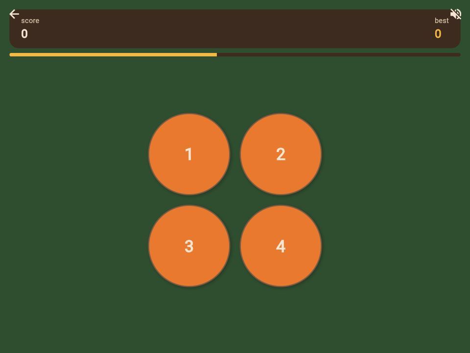
Êtes-vous aussi malin qu'un singe ? Retrouvez les numéros dans l'ordre.
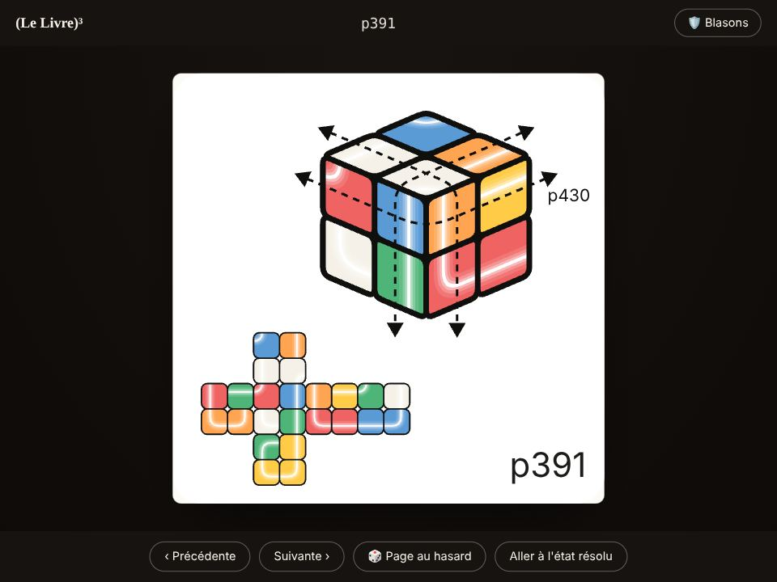
Pour ce projet, j'ai cherché à réaliser un livre physique, imprimable, qui permet de jouer au Rubik's Cube. L'application présentée ici est pensée comme un livre, ce qui a entraîné des contraintes importantes, comme la limitation du nombre de pages.
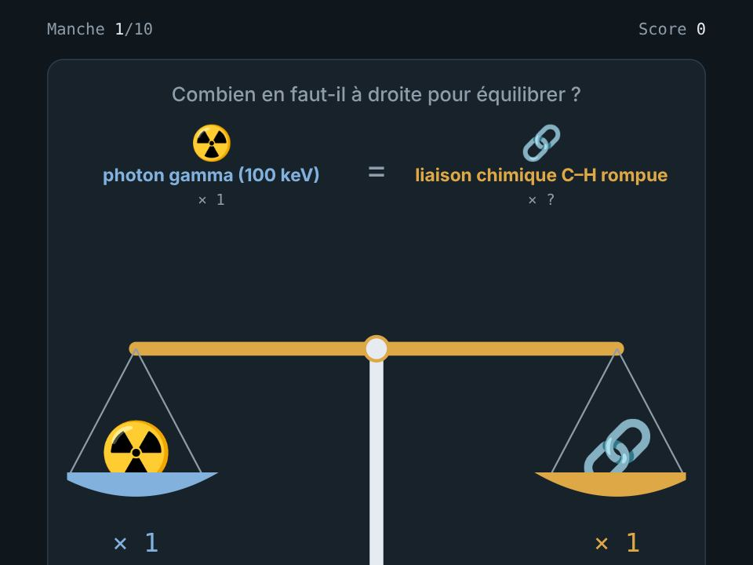
Combien pèse une Ferrari en photons ? Un jeu d'ordres de grandeur.
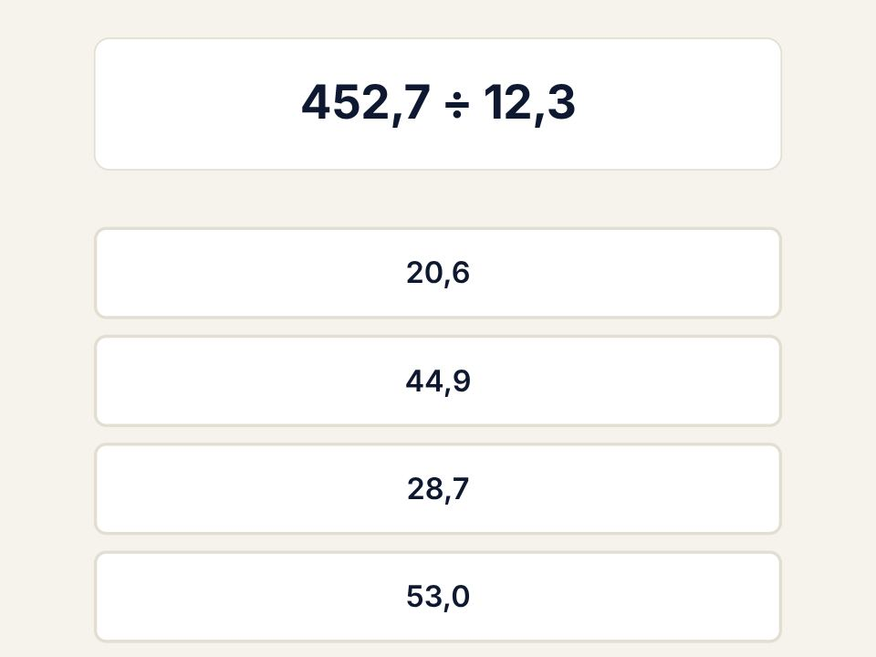
Application de calcul mental à jouer sur téléphone pour s'entraîner à manipuler des ordres de grandeur. L'objectif n'est pas de faire le calcul complet, mais de trouver rapidement la réponse la plus probable.
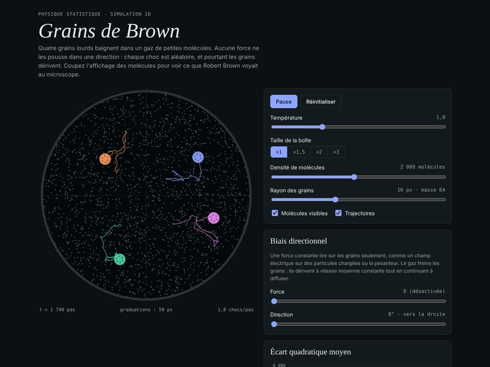
Visualisation simplifiée du mouvement brownien.
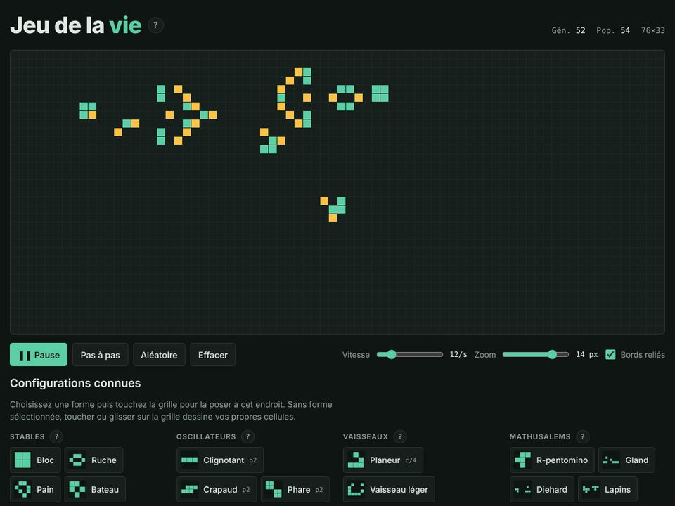
Un classique mais toujours aussi fascinant.
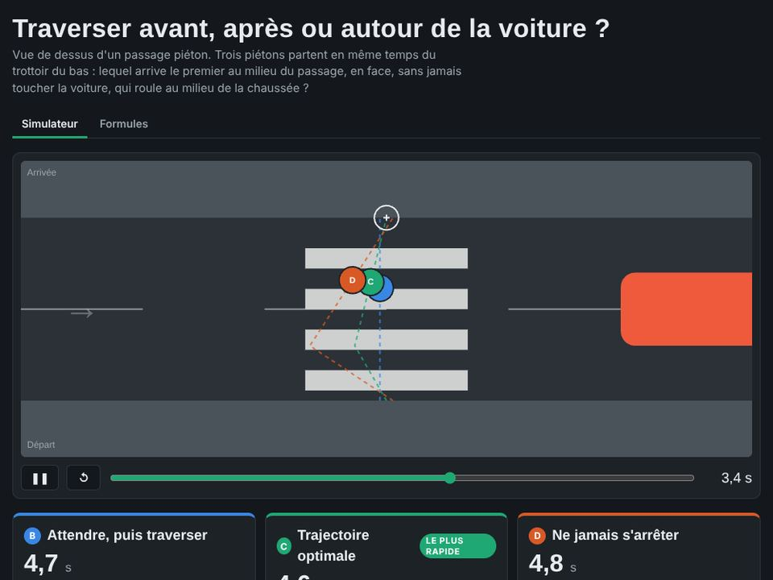
Je me suis toujours demandé, au passage piéton, s'il valait mieux attendre que la voiture passe ou être impatient et essayer de la contourner.
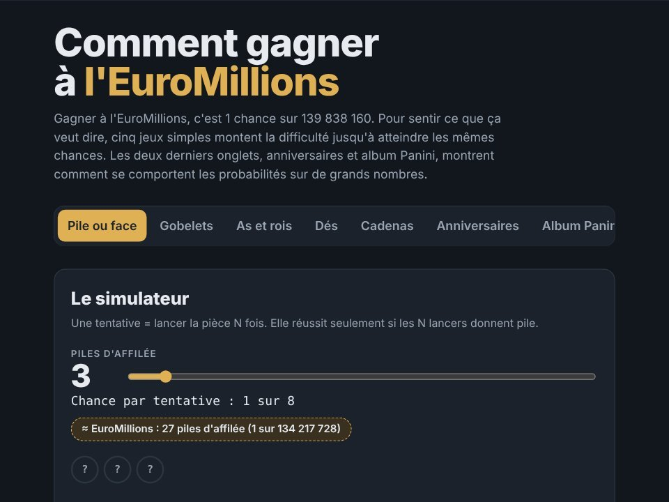
Que vaut une chance sur 139 838 160, celle de l'EuroMillions ? Cinq jeux montent la difficulté jusqu'à ce niveau : pile ou face, gobelets, as et rois, dés et cadenas. En plus, anniversaires et album Panini illustrent les probabilités sur de grands nombres.
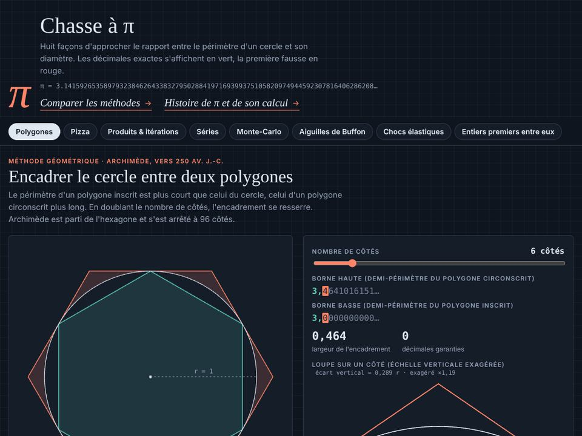
Huit façons d'approcher π, des polygones d'Archimède à la série de Chudnovsky, en passant par Monte-Carlo, les aiguilles de Buffon et les chocs de Galperin. Les décimales exactes s'affichent en vert, avec quatre mille ans d'histoire.
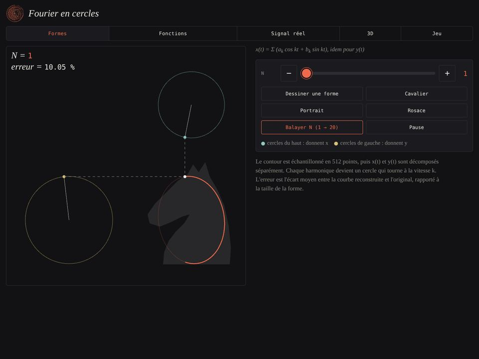
Des cercles qui tournent redessinent n'importe quelle forme. Cinq onglets : contours à dessiner, fonctions classiques, enregistrements réels analysés par FFT, courbes en 3D et le jeu du gribouillis.
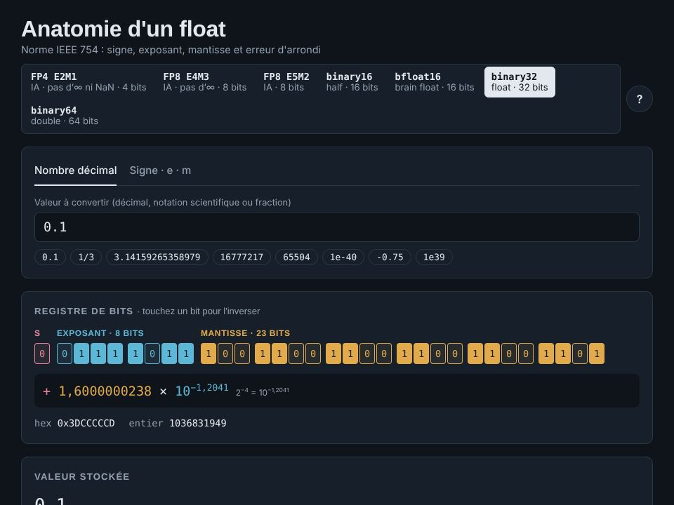
Pourquoi 0,1 n'est pas exactement 0,1 dans un ordinateur. On tape un nombre et l'on voit ses bits de signe, d'exposant et de mantisse, la valeur réellement stockée et l'erreur d'arrondi, dans sept formats.
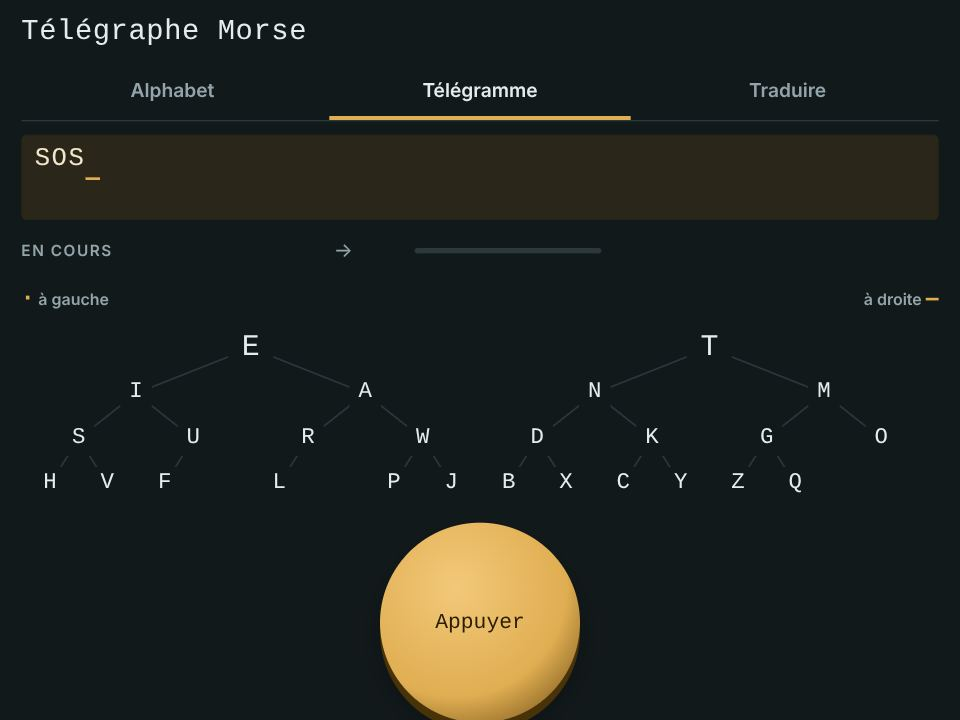
L'alphabet avec ses mots-repères (Co·ca·Co·la donne C), un manipulateur à presser du doigt avec l'arbre des lettres qui s'illumine, et un traducteur qui lit le message à voix de télégraphe.
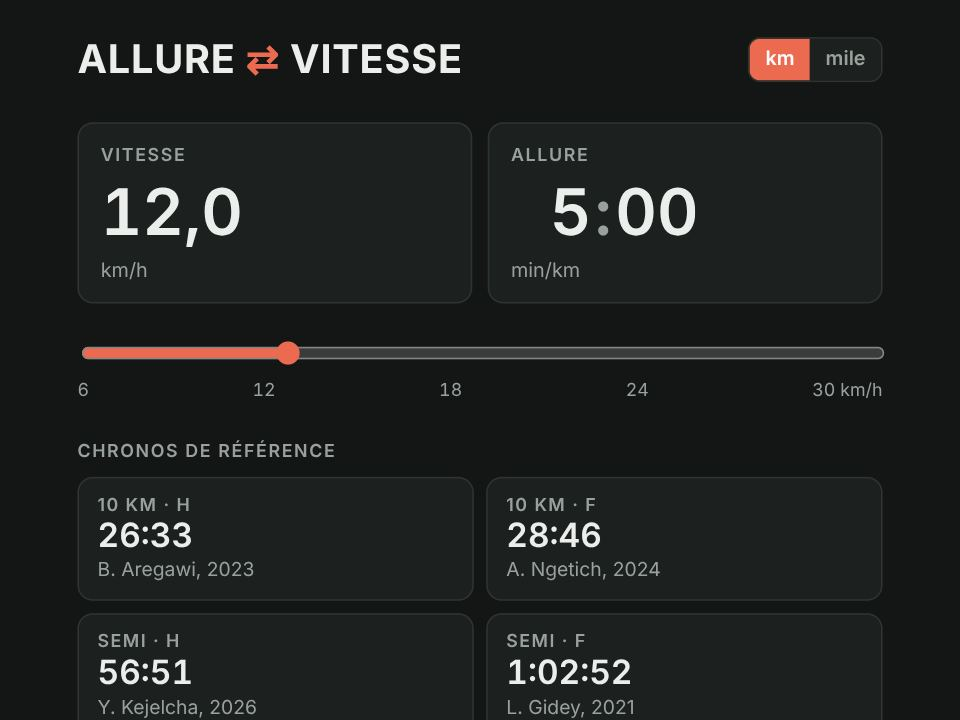
Passer de la vitesse à l'allure et inversement, en kilomètres ou en miles. On obtient le temps d'arrivée sur 10 km, semi et marathon, ou l'allure à tenir pour un objectif, avec les temps de passage.
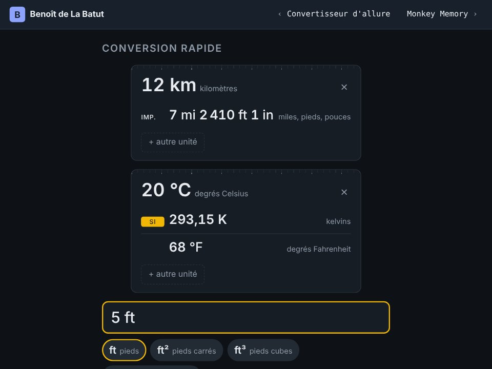
Le convertisseur d'unités le plus simple d'internet.